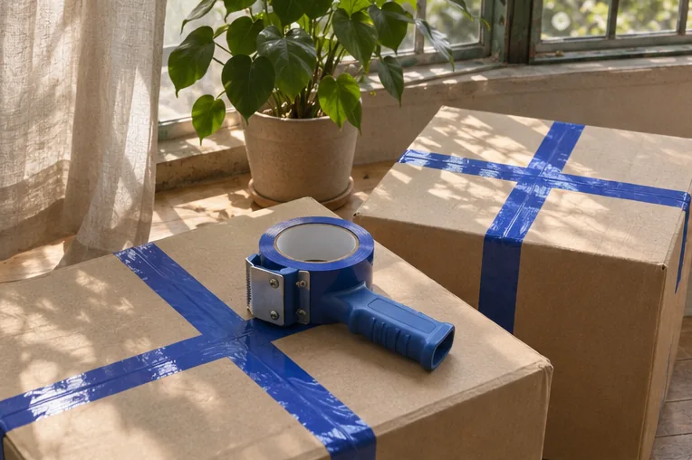
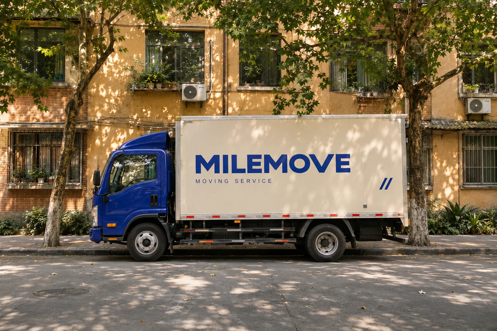
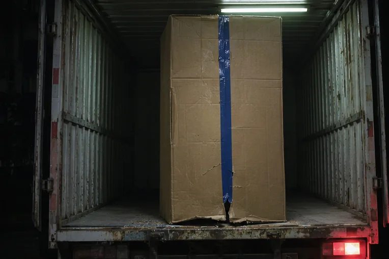

成都同城搬家服务
把日子，搬到新家。
从第一卷封箱胶带，到最后一只箱子进门。
打包、搬运、归位，这一路交给迁里。
每日服务时间08:00 – 20:00

成都 · 车队街拍
01 / 03
一车一户同一辆车，直接送到家
一箱一码装车和签收都按箱点数
费用先讲清里程和楼层，逐项看明白
搬家方案 SERVICES
这一趟，怎么搬？
从几箱行李到一整个家，
按你的物品和需要的人手来选。
费用估算 QUICK QUOTE
先算清楚，再出发。
选好方案、距离和楼梯层数，就能看到这一趟的参考价。
1 公里40 公里
迁里费用预估单ESTIMATE
¥
- 轻装小搬 · 起步价
- ¥168
- 超过 5 公里的里程费
- ¥0
- 楼梯搬运费
- ¥0
起步价含 5 公里。超出部分每公里 ¥6，楼梯每层 ¥20。特殊大件另行确认。
服务流程 HOW WE MOVE
每一箱，都有去向。
你手里和司机车上，各有一份清单。
- 上门点数
按房间清点物品，大件单列，零碎物件装箱再记数。
- 分区封箱
封条上写好房间和箱号。易碎品单独包，标记朝上。
- 专车直送
装车后再数一遍。司机和你核对同一组箱号就出发。
- 对码签收
在新家逐箱点收；司机回场前，补拍最后一张空车照。
搬前须知 FAQ
常见问题
需要自己提前买纸箱吗？
可以自备。选「打包到家」时，师傅会带纸箱、蓝色封箱胶带和填充材料。书籍建议分成小箱，留出双手能抱稳的重量。
楼层费怎么算？
只算需要走楼梯的高度。例如从无电梯三楼搬到有电梯的六楼，从三楼到一楼走两层，估价时选「2 层」即可。
签收后还会留下哪些记录？
随车回单保留装车数、收货数和清车照片。碰到没有对应箱号的物品，会另开一张暂存联。
搬家实录 FIELD NOTES
槐荫里的一次两居搬家。
槐荫里梧桐公寓
一张清单，十八箱生活。
六箱书、八箱衣物、四箱厨房用品。客户把易碎品的箱号圈在回单上，师傅把这四箱留到最后装。
“杯子一个都没碎。十八箱都点过了，辛苦两位师傅。”收货人留言 · 16:48
回场检查 RETURN INSPECTION
还差一张空车照。
收货联已经签完。按流程，司机打开后门，给车厢拍了张照片。
- 旧址装车
- 18 箱
- 新址签收
- 18 箱
- 车厢内剩余
- 01 箱
“封条是我们的。可我装车时，没见过这个箱子。”司机补记 · 18:12
暂存件追踪 HOLDING BAY
第十九箱。
多出来的一箱留在车里，等失主来认。
夜班交接时，它已经挪到了后门边。

迁里异常件暂存联留存联
NO. 019- 关联运单
- CD–0618
- 原收货人
- 已确认无遗留
- 寄件地址
- 未填写
- 暂存位置
- B 区 · 原车
交班备注：先别开箱。
刚才数到三下，声音是从里面传出来的。
回单续页 DELIVERY UPDATE
车没出库。
箱子到了。
23:17，库区的车闸还是关着的。
同一张暂存联下，多出了一组门口机回传。
新收件人当前查看回单的人
门口机 / CAM 019
它就在门外。
门口机录到它时，整层楼的感应灯只亮了这一盏。
封条从里面断了。
刚才敲的是纸板。这三下，敲的是门。
“我听见你了。”
它把脸贴在门上。门一直锁着。